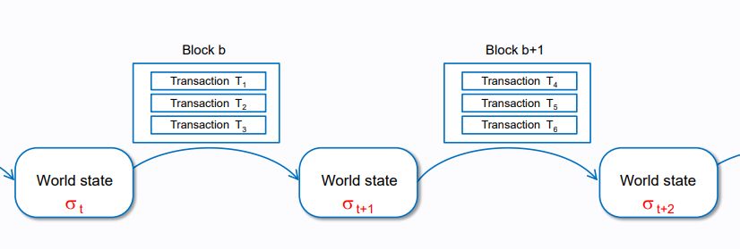
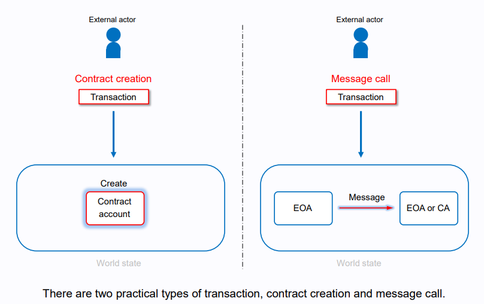
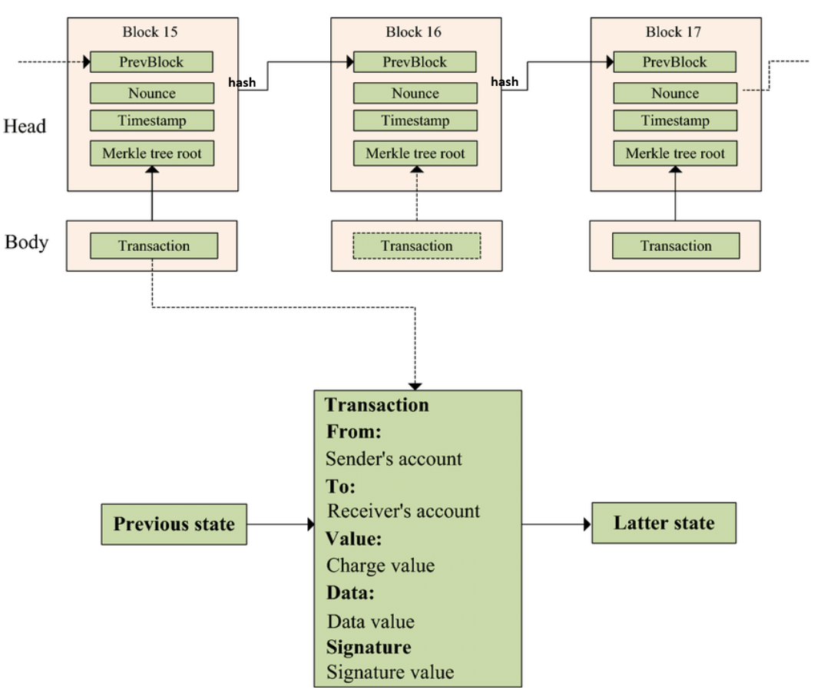
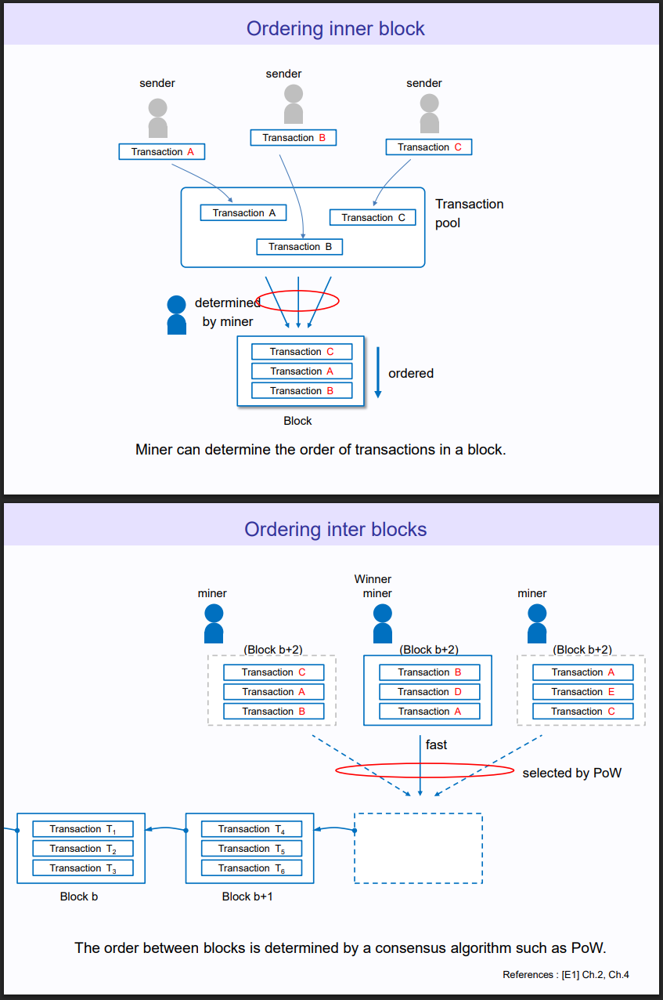

Blockchain
Basic Concepts: Token vs Transaction vs Block vs Coin
| Transaction (User Event) | Block (The Container) | Coin (Native Asset) | Token (Commercial Asset) | |
|---|---|---|---|---|
| What is it? | A single request to move funds or execute code. | A bundle of transactions "sealed" together. | The native "money" of the blockchain protocol. | Representative of commercial assets, e.g., USDT, USDC |
| Created By | An individual user (via Private Key). | The Network Validators (Consensus). | The Protocol (Hardcoded Math). | A Smart Contract (Company/Developer). |
| Example | "Send 5 USDC to Bob." | Block #19,283,744. | ETH (Ethereum), SOL (Solana). | USDC, LINK, SHIB, UNI. |
What is behind trading in blockchain
- John purchased 1000 USDC paid $1000 USD deposited to Circle (who issued USDC) bank account.
- Circle backend triggers a smart contract execution that logs 1000 USDC to John
The USDC smart contract is publicly visible.
The core logic writes in FiatTokenV2, which is just a ledger created/updated dedicated to this customer John.
// This logic is what the Proxy "runs" using its own storage
function mint(address _to, uint256 _amount) external whenNotPaused onlyMinters returns (bool) {
require(_to != address(0), "Cannot mint to zero address");
require(_amount > 0, "Amount must be greater than 0");
// Check if the minter has enough "allowance" from Circle to create new coins
uint256 mintingAllowedAmount = minterAllowances[msg.sender];
require(_amount <= mintingAllowedAmount, "Exceeds minting allowance");
// Update the ledger (The Data Storage part)
totalSupply_ = totalSupply_.add(_amount);
balances[_to] = balances[_to].add(_amount); // This gives John his 1000 USDC
minterAllowances[msg.sender] = mintingAllowedAmount.sub(_amount);
emit Mint(msg.sender, _to, _amount);
emit Transfer(address(0), _to, _amount);
return true;
}
About this smart contract execution, it can be considered as a transaction. This transaction is appended in a block that on certain conditions, e.g., block processing interval of 10 mins, will be finalized by ethereum nodes and broadcast to all nodes.
This smart contract consumes native coin (ETH) since the whole ecosystem run on ethereum where ETH represents the computation and storage resource. The said 1000 USDC is just a value on company Circle smart contract.
-
John starts using 1000 USDC to buy other crypto coins.
Trading for ETH (or other same-chain coins):
-> Use a Decentralized Exchange (DEX) like Uniswap.
-> Must already have a small amount of ETH in wallet to pay the "Gas Fee" (the miners/validators) to process the transaction.
Trading for BTC and DOGE (Cross-Chain):
-> There are bridge apps that lock USDC and hook up the same worth coins and proceed trading. This could take minutes ot even hours to complete.
Alternative to cross-chain trading:
-> There are "wrapped coins" that represent John as the owner but held in custody by the company who issued that wrapped coins
-
John enjoys his investment in blockchain; company Circle can use John's $1000 to invest US Treasure bonds (claimed by Circle that every USDC is backed by US Treasure bonds OR JUST USD cash) to earn coupon money.
Smart Contract
A "smart contract" is simply a collection of code (its functions) and data (its state) that resides at a specific address on the Ethereum blockchain.
A very common example is issuing a new coin.
// SPDX-License-Identifier: MIT
pragma solidity ^0.8.20;
import "@openzeppelin/contracts/token/ERC20/ERC20.sol";
contract TopUpCoin is ERC20 {
constructor() ERC20("TopUpCoin", "TUC") {
// Mint 1000 tokens to the person who deploys it
_mint(msg.sender, 1000);
}
function topUp(uint256 amount) public {
// _mint is an internal ERC20 function that increases
// the total supply and adds to the user's balance.
_mint(msg.sender, amount);
}
}
where the persistent and ephemeral data are
- The persistent data and operation
- The Ledger (
_balances): A mapping that looks likeaddress=>uint256. - The Total Supply (
_totalSupply): Auint256that tracks the total number of coins in existence. - Metadata (
_nameand_symbol): The strings"YuqiCoin"and"YUQIC". These are stored in the contract's storage during the constructor and usually never change again. - Cost: When
_mintis called, it writes to the_balancesmapping. This is the most expensive part of the transaction (Gas-wise). Inconstructor()by default it deposits 1000 Yuqi coins, then user cantopUpwith a custom amount.
- The Ledger (
- Ephemeral Data (live in a session)
- The Parameter (
initialSupply) - Global Variables (
msg.sender) - Intermediate Calculations: The math
initialSupply * 10**decimals()happens in the Stack.
- The Parameter (
// SPDX-License-Identifier: MIT
pragma solidity ^0.8.20;
import "forge-std/Script.sol";
import "../src/YuqiCoin.sol";
contract DeployScript is Script {
function run() external {
uint256 deployerPrivateKey = vm.envUint("PRIVATE_KEY");
vm.startBroadcast(deployerPrivateKey);
// Deploy Token
YuqiCoin token = new YuqiCoin(100);
vm.stopBroadcast();
}
}
where
vm.startBroadcast()andvm.stopBroadcast()vm: This is a special "Cheatcode" object available only in scripts and tests.startBroadcast(privateKey): This tells Foundry to use that specific private key to sign transactions. Any new contract or function call following this line will be treated as a real transaction to be sent to the blockchain.
Common Smart Contract Syntax
require(condition, "error"): Revert transaction if condition is false and return a message.msg.sender: The immediate caller address.msg.value: Ether (in wei) sent with the call.keccak256(abi.encodePacked(...)): Hashing function to generate bytes32 ids.abi.encodePacked(...): Tight encoding used withkeccak256.mapping(Key => Value): Key-value storageeventandemit: Declare and trigger events for off-chain listeners. Example:event Registered(...)andemit Registered(...).indexed (in event params): Makes a field searchable in logs (e.g.,bytes32 indexed id).modifier: Reusable pre/post checks.constructor(): Runs once on deployment to initialize state.- Function visibility keywords:
public,external,internal,private(file usespublicandview). - Function mutability keywords:
view: reads state, does not modify it.pure: does not read or modify state.payable: accepts Ether.- (implicit) non-payable: default — rejects Ether.
- Data location
memory: creates a temporary, mutable copy that lives only for the function call — appropriate required a local copy or plan to mutate it.calldata: a non‑mutableviewdirectly into the call data — cheapest (no copy) and recommended for external functions that only read the input. Example:function register(string calldata data) external returns (bytes32).storage: refers to persistent contract storage.
Below is a more complex smart contract example that registers data ownership by binding data hash to the owner addr.
// SPDX-License-Identifier: MIT
pragma solidity ^0.8.20;
contract MiniRegistry {
mapping(address => bytes32[]) public ownerItems; // owner -> list of ids
mapping(bytes32 => string) public items; // id -> data
event Registered(bytes32 indexed id, address indexed owner);
function register(string memory data) public returns (bytes32) {
bytes32 id = keccak256(abi.encodePacked(msg.sender, block.timestamp, data));
items[id] = data;
ownerItems[msg.sender].push(id);
emit Registered(id, msg.sender);
return id;
}
}
where
The storage data that will be persisted on blockchain is
ownerItems(storage):mapping(address => bytes32[])— persistent ledger: for each owner address, a dynamic array ofbytes32ids (each .push writes storage and costs gas).items(storage):mapping(bytes32 => string)— persistent mapping from id → stored string data.- Contract balance:
address(this).balance— Ether held by the contract is stored by the EVM account, not in your Solidity variables. - Contract code & storage root: the deployed bytecode and all storage slots (including mappings/arrays) are persisted on-chain.
Smart contract itself runs on EVM, developer/user can input data, and see output to/from EVM via event and catching emit data.
The user-interaction data is
event: declares a log type (Registered) that off-chain listeners can filter.emit: triggers the event log (emit Registered(id, msg.sender);).
Smart Contract Invocation and Listening
ABI (Application Binary Interface) defines how to construct request. It is created from the definition of smart contract.
Below is the decoded ABI (Application Binary Interface).
const ABI = [
{"inputs":[{"internalType":"string","name":"data","type":"string"}],"name":"register","outputs":[{"internalType":"bytes32","name":"","type":"bytes32"}],"stateMutability":"nonpayable","type":"function"},
{"anonymous":false,"inputs":[{"indexed":true,"internalType":"bytes32","name":"id","type":"bytes32"},{"indexed":true,"internalType":"address","name":"owner","type":"address"}],"name":"Registered","type":"event"}
]
Having created/deployed the contract, developer receives CONTRACT_ADDRESS.
With ABI, developer prepares ethers.Contract(CONTRACT_ADDRESS, ABI, signer);, then contract.registerWork(...) can be dynamically defined from the deployed contract.
receipt.logs catches smart contract emit data.
Below is the full js application that interacts with EVM.
const { ethers } = require("ethers");
const RPC_URL = process.env.RPC_URL;
const PRIVATE_KEY = process.env.PRIVATE_KEY;
const CONTRACT_ADDRESS = process.env.CONTRACT_ADDRESS;
async function main() {
const provider = new ethers.providers.JsonRpcProvider(RPC_URL);
const signer = new ethers.Wallet(PRIVATE_KEY, provider);
const contract = new ethers.Contract(CONTRACT_ADDRESS, ABI, signer);
const tx = await contract.registerWork(
"My Work",
"desc",
["QmHash1"],
ethers.constants.AddressZero,
"Alice",
{ value: ethers.utils.parseEther("0.01") }
);
const receipt = await tx.wait();
for (const log of receipt.logs) {
try {
const parsed = contract.interface.parseLog(log);
if (parsed.name === "Registered") {
console.log("Registered:", parsed.args);
}
} catch (e) {}
}
const count = await contract.getUserAssetCount(signer.address);
console.log("assetCount:", count.toString());
}
main().catch(console.error);
Wallet vs Smart Contract
| Fields | What it looks like for a Regular Wallet | What it looks like for a Contract |
|---|---|---|
| Nonce | 0x5 (Count of transaction, 5 indicated sent 5 transactions) |
0x1 (Usually 1) |
| Balance | 0xde0b6b3a7640000 (1 ETH in hex) |
Varies |
| CodeHash | 0xc5d2...ad27 (The hash of nothing) |
The hash of the contract bytecode. |
| StorageRoot | 0x56e8...1662 (The hash of an empty tree) |
The root hash of the contract’s data. |
The above info can be retrieved via proof.
state = ankr_w3.eth.get_proof(MY_WALLET_ADDR, [], 'latest')
print(f"Account Proof for: {MY_WALLET_ADDR}")
print(f"Nonce: {state.nonce}")
print(f"Balance: {state.balance} Wei")
print(f"CodeHash: {state.codeHash.hex()}")
print(f"StorageHash: {state.storageHash.hex()}")
The nonce of regular wallet is used to prevent duplicate replays.
Transactions
Transactions are contained in blocks. Each block construction updates world state. World state is a nested kv map account hash -> diff hashes -> various actual data in blocks.

There are two types of transactions.
- Create Contract
- Transmit Message or Contract Execution

Create contract receipt:
{
"transactions": [
{
"hash": "0x913622722d4e1bc8651a1e80a2486dd4d3a0c7b0029807e8eaf245b94f438d0a",
"transactionType": "CREATE",
"contractName": "AssetFactory",
"contractAddress": "0x2b33e63e99cbb1847a2735e08c61d9034b13a171",
"function": null,
"arguments": null,
"transaction": {
"from": "0xfe3b557e8fb62b89f4916b721be55ceb828dbd73",
"gas": "0x2e0b70",
"value": "0x0",
"input": "0x...",
"nonce": "0x3d",
"chainId": "0x539"
},
"additionalContracts": [],
"isFixedGasLimit": false
}
],
"receipt": [...]
}
Run contract receipt:
{
"transactions": [
{
"hash": "0x5d446f2343a055743f5482312d4a5160868f03f7737234237890218738912",
"transactionType": "CALL",
"contractName": "AssetFactory",
"contractAddress": "0x2b33e63e99cbb1847a2735e08c61d9034b13a171",
"function": "createAsset",
"arguments": [
"Gold Token",
"GLD",
1000000
],
"transaction": {
"from": "0xfe3b557e8fb62b89f4916b721be55ceb828dbd73",
"to": "0x2b33e63e99cbb1847a2735e08c61d9034b13a171",
"gas": "0x15f90",
"value": "0x0",
"input": "0x89029a...",
"nonce": "0x3f",
"chainId": "0x539"
},
"additionalContracts": [],
"isFixedGasLimit": false
}
],
"receipt": [...]
}
Wei
Wei is the smallest denomination of ether — the cryptocurrency coin used on the Ethereum network.
ether == \(10^{18}\) wei == 1,000,000,000,000,000,000 == 1 ETH
Transaction Signature
Ethereum Private Keys are 64 random hex characters or 32 random bytes.
The public key is derived from the private key using ECDSA.
The private key creates a signature. The public key verifies the signature.
Gas Fee
Gas is the transaction fee paid to the chain computers to execute a transaction or smart contract.
Gas used in Ethereum (ETH) varies by transaction type:
- Simple ETH Transfer: 21,000 gas units.
- ERC-20 Token Transfer/Approval: Around 45,000 - 65,000 gas units.
- Smart Contract Interactions (DeFi, NFTs): Can range from 100,000 to 300,000+ gas units
Gas vs Coin
- Coin represents permission that a balance/wallet can make request to a blockchain; on detected zero coin in a wallet, EVM will immediately reject the request, even for the requests not required of consuming any computation nor storage resource.
- Gas represents the computational effort of a smart contract.
Gas vs Transaction Fee
Given the log:
They mean
Gas used: 22160: Measurement for computational effort, e.g., how many lines of bytecode to execute for a smart contractEffective gas price (wei): 25193522: To pay for each unit of Gas.Transaction fee (wei): 558288447520: \(\text{Gas} \times \text{Gas Price} = \text{Transaction Fee}\)
Transaction vs Block
In detail, \(\text{Transaction}\in\text{Block}\). Previous \(\text{Block}_{\tau-1}\) is hashed as input to this time \(\text{Block}_{\tau}\), thereby any changes to previous blocks have cascading effect on all latter blocks resulting in changes of all latter block hashes.

MultiSig Wallet
Multi-signature wallets are a type of cryptocurrency wallet that requires multiple keys to unlock funds or approve transactions.
Cyber Security and Hacker Attack
33% Attack (for PoS)
In Ethereum consensus design, if >66.6% validator computers vote "yes" to a block, the block is finalized.
If a hacker controls >33.3% of the stake, they can simply refuse to vote. Since the network needs 66.6% to finalize anything, the network stops finalizing blocks. The chain can still grow, but nothing becomes "permanent."
51% Attack (for PoW)
Hacker can control the short-term future (reorg short chains, censor transactions) for PoW trusts "the most work".
For example, assume a hacker has >51% computation power.
- A hacker spends 10 BTC to buy an asset (transaction A), and this transaction goes into a block #100. The remaining 49% nodes validate the block #100 and proceed to next block #101. Secretly, the hacker goes back to Block #99 (the block before the payment/transaction A was finalized), and modifies transaction A in which no BTC is transferred.
- Because this hacker has more power (>51%), his/her chain grows faster than the honest chain reaching the block #102.
- The remaining 49% nodes see two chains; both contain valid blocks. But the hacker's chain is longer (has more proof-of-work). By the rules of the Bitcoin software, the remaining node must switch to the hacker's chain.
This >51% is guaranteed to allow a hacker eventually outgrow honest chain. If this hacker controls less nodes, e.g., 49%, he/she might still be able to win ahead the block by being lucky enough to consecutively find multiple blocks. In fact, three consecutive block discovery probability \(11.76\%=0.49^3\) is already small.
In PoW blockchain, in short-term there are always multiple parallel forks that some miners are ahead of a few blocks to other miners, so that one powerful hacker miner could win ahead in the short term, but in the long term the >51% chain win.
66% Attack (for PoS)
If a hacker controls >66%, this hacker can finalize a block, and then later finalizes a conflicting block (rewriting history). However, the Ethereum protocol has a "slashing" mechanism. If the protocol detects this double-voting, it effectively burns (destroys) the attacker's entire stake.
Proof of Truth: Consensus Mechanisms
In traditional IT architecture (a centralized system), the "truth" is whatever the system database holds. In a decentralized system (blockchain), thousands of computers (nodes) must agree on the "truth" (which transactions are valid and in what order) without trusting each other.
Here is a list and explanation of the major consensus mechanisms.
Proof of Work (PoW)
- To add a block to the chain, a computer (miner) must solve a continuously difficult mathematical puzzle (finding a hash). This requires massive amounts of electricity and hardware. The "work" refers to puzzle solving.
- Examples: Bitcoin, Dogecoin, Litecoin.
The puzzle result hash goes together with previous hash and this user_input to compute this block hash.
The pseudocode of one user input
def make_one_blockchain_transaction(user_input, prev_hash):
while True:
puzzle_hash = puzzle()
block_hash = hash(user_input, prev_hash, puzzle_hash)
prev_hash = block_hash
return user_input, prev_hash
Once a computer (miner) correctly solves the puzzle, it wins the right to add the next "Block" to the chain. A computer (miner) can receive rewards (fractions of transaction fee) on processing/completing a transaction.
| Coin | Mechanism | Block Reward (The Jackpot) |
|---|---|---|
| Bitcoin | Proof of Work | 3.125 BTC |
| Dogecoin | Proof of Work | 10,000 DOGE |
PoW Transaction Concurrency and Block Winner
Diff users submit transactions that together form a block constructed by a miner. Diff miners can have diff blocks.
Finally, the fastest miner can see its block added to the main chain.

For any single block, the winner miner takes all. If a miner computer finds the valid hash, the miner computer gets the full block subsidy (e.g., currently 3.125 BTC) plus transaction fees. There is no prize for second place.
The privilege of finding next block is probabilistic proportional to computation resource. For example, a miner with 10% of the global hashrate has a 10% chance of finding the next block.
The Puzzle Detail in PoW (BitCoin as The Example)
- A determined hash target
The Bitcoin protocol is programmed to ensure that, on average, one block is found every 10 minutes.
The network doesn't change the target for every block. It waits for 2,016 blocks to pass (which takes almost exactly 2 weeks if blocks come every 10 minutes). When the 2,016th block is reached, every node in the world looks at its own copy of the blockchain and performs a calculation.
- Find the value from the formula
The "Block Header" is exactly 80 bytes of data. It is a concatenation of 6 fields:
| Field | Size | Description |
|---|---|---|
| Version | 4 bytes | Protocol version number. |
| HashPrevBlock | 32 bytes | The SHA256 hash of the previous block header. |
| HashMerkleRoot | 32 bytes | The "fingerprint" of all transactions in this block. |
| Time | 4 bytes | Current Unix timestamp. |
| Bits (nBits) | 4 bytes | A compressed version of the Target. |
| Nonce | 4 bytes | The number the miner changes to get a new hash. |
Proof of Stake (PoS)
- Instead of miners, there are Validators. To become a validator, a node addr must lock up ("stake") a large amount of the cryptocurrency (e.g., 32 ETH) into a smart contract.
- The network randomly selects a validator to propose the next block. If the validator acts honestly, they get a reward. If they try to cheat (validate bad blocks, computer is service down), the network "slashes" (destroys) their staked money.
- Pros: Energy efficient (99.9% less energy than PoW); lower barrier to entry (no hardware farms needed).
- Cons: "Rich get richer" criticism; complex implementation (requires the Beacon Client).
- Examples: Ethereum (current), Cardano, Solana.
Technically speaking, if a node addr stakes more coins, it has higher probability of finding the next block (implementation detail may vary, e.g., in 2025, there is a cap of 2048 ETH for one node addr to prevent one node from having too much power). To have more voting power, human user needs to set up many computer nodes with each node addr deposited 2048 ETH.
Proof of Authority (PoA)
- There is no mining and no money at stake. Instead, a small group of pre-approved identities (Signers) has the right to create blocks.
- Pros: Extremely fast; zero transaction costs (if desired); perfect for private networks.
- Cons: Not decentralized. It relies on trusting specific humans/entities.
- Examples: Testnets (Sepolia, Goerli), Private Corporate Blockchains (JP Morgan’s Quorum).
Consensus Implementation and Standards
- Raft: A "Leader" (Minter) is elected. They propose blocks and everyone else follows. It is extremely fast (no empty blocks) but assumes no one is trying to "hack" the system (Crash Fault Tolerant).
- IBFT (Istanbul Byzantine Fault Tolerance): A group of validators takes turns proposing blocks. They must reach a 2/3 majority vote to finalize a block. This is slightly slower but can survive malicious nodes (Byzantine Fault Tolerant).
The 5-Layer Arch of Blockchain
- Summary Table: Mapping Blockchain to OSI
| Blockchain Layer | Maps to OSI Layer | Why? |
|---|---|---|
| Application Layer | Layers 5, 6, 7 | This is the UI, the encryption, and the session management. |
| Execution/Socket Layer | (None / Upper L4) | OSI has no concept of a "Virtual Machine" to run global code. |
| Consensus Layer | (None) | Traditional networking doesn't require "Agreement" to move data. |
| Network (P2P) Layer | Layer 3 & 4 | Uses IP and TCP/UDP to discover peers and broadcast blocks. |
| Infrastructure Layer | Layer 1 & 2 | The literal wires and computers. |
Non-Fungible Token (NFT)
A non-fungible token (NFT) is a unique digital identifier that is recorded on a blockchain and is used to certify ownership and authenticity (although the legal industry is still skeptical about blockchain NFT as proof of ownership).
NFT uses a diff standard from currency to ERC-721.
| Standard | Full Name | Type | Best Use Case |
|---|---|---|---|
| ERC-20 | Fungible Token | Identical | Currencies (USDC, USDT), Voting tokens (UNI), Staking rewards. |
| ERC-721 | Non-Fungible Token | Unique | Digital Art, Profile Pictures (PFP), Real Estate deeds, Event Tickets. |
| ERC-1155 | Multi-Token | Hybrid | Video Games (Items + Currency), Membership Passes. |
ERC-20 vs ERC-721
In short, tokens are state machines that utilize Hash Maps (specifically Merkle Patricia Trie nodes in Ethereum state, abstracted as mapping in Solidity) to persist data.
Diff standards have diff hash mapping designs.
ERC20 (Address-Centric): The primary key is the User Address.
ERC721 (ID-Centric): The primary key is the Token ID.
Inter-Planetary File System (IPFS)
IPFS (Inter-Planetary File System) is a peer-to-peer distributed file system that is used primarily for data that can’t be stored on a blockchain.
For NFT underlying digital asset, it usually by IPFS it is stored.
NFT Practice
Preparation
There are two files to submit to IPFS server, one is the digital asset itself, e.g., an image, and the description metadata of this image in json.
Below is an example flow to Pinata (a popular IPFS server in 2025)
- Upload Image: Upload
art.pngto Pinata. Save the CID ofart.png. - Create Metadata: Create
metadata.json(replace<YOUR_IMAGE_CID_FROM_PINATA>):
{
"name": "Foundry Art NFT",
"description": "Minted with Forge and Cast",
"image": "ipfs://<YOUR_IMAGE_CID_FROM_PINATA>"
}
- Upload Metadata: Upload
metadata.jsonas a file to Pinata. - Save the CID of
metadata.json: This is Token URI. (e.g.,ipfs://QmPc...)
Deploy the digital asset to Blockchain
Below is an example solidity smart contract (for Ethereum).
It can tell that an NFT is just another type of token as ERC721 (recall that a typical currency token is ERC20) with claimed ownership and visibility scope.
// SPDX-License-Identifier: MIT
pragma solidity ^0.8.20;
import "@openzeppelin/contracts/token/ERC721/extensions/ERC721URIStorage.sol";
import "@openzeppelin/contracts/access/Ownable.sol";
contract MyArtNFT is ERC721URIStorage, Ownable {
uint256 private _nextTokenId;
constructor() ERC721("FoundryArt", "FART") Ownable(msg.sender) {}
function mintNFT(address recipient, string memory tokenURI)
public
onlyOwner
returns (uint256)
{
uint256 tokenId = _nextTokenId++;
_mint(recipient, tokenId);
_setTokenURI(tokenId, tokenURI);
return tokenId;
}
}
To deploy the NFT to chain, replace <YOUR_METADATA_CID> and <YOUR_WALLET_ADDR> with actual string.
// SPDX-License-Identifier: MIT
pragma solidity ^0.8.20;
import "forge-std/Script.sol";
import "../src/MyArtNFT.sol";
contract DeployNFT is Script {
function run() external {
uint256 deployerPrivateKey = vm.envUint("PRIVATE_KEY");
vm.startBroadcast(deployerPrivateKey);
MyArtNFT nft = new MyArtNFT();
// 4. (Optional) Mint the first NFT immediately during deployment
// Replace with your Wallet Address and Metadata CID
string memory uri = "ipfs://<YOUR_METADATA_CID>";
nft.mintNFT("<YOUR_WALLET_ADDR>", uri);
// 5. Stop recording
vm.stopBroadcast();
}
}
Layer 1 vs Layer 2 Scaling
Scaling involves methods to make a blockchain handle more transactions per second (TPS) without crashing or becoming too expensive.
Layer 1 Scaling (On-Chain)
Layer 1 scaling involves changing the fundamental rules or code of the blockchain to make it faster (like Bitcoin, Ethereum, or Alephium).
Common Techniques:
- Sharding: Splitting the network into smaller pieces (shards) so not every computer has to process every transaction.(Used by Alephium, Near, planned for Ethereum).
- Consensus Change: Switching from slow systems like Proof of Work to faster ones like Proof of Stake (e.g., Ethereum's "The Merge").
- Block Size Increase: Making the blocks of data larger so they fit more transactions (e.g., Bitcoin Cash increased block size from Bitcoin).
Layer 1 Scaling Pros and Cons
- Pros: The solution is built-in; no external software is needed.
- Cons: Hard to upgrade (requires all nodes to agree/update); often leads to "forks" or splits in the community.
Layer 2 Scaling (Off-Chain)
Layer 2 refers to a separate protocol or network built on top of the Layer 1 blockchain. It processes transactions independently and then sends a summary to the main chain (e.g., Lightning Network, Arbitrum, Base.)
Common Techniques:
- Rollups: Bundling hundreds of transactions into one single data packet and submitting it to Layer 1.
- State Channels: Two users open a private channel, trade back and forth thousands of times instantly, and only record the final balance on the blockchain.
- Sidechains: Independent blockchains that run parallel to the main chain but are connected via a bridge.
Layer 2 Scaling Pros and Cons
- Pros: extremely fast and cheap; keeps the main Layer 1 decentralized and secure.
- Cons: Can be more complex to use; sometimes less secure than the main chain if the Layer 2 network has bugs.
Coin Mining Practice for Small Individuals
The coin mining refers to PoW type of blockchain; for PoS blockchain it needs to lock a large sum of money (e.g., 32 ETH for Ethereum) and set up a full node (requires 3TB+ SSD hardware) with high bandwidth to run, not friendly to small individual users.
By 2025, it is not profitable to use personal GPU running on household electricity to mine coins as most of the miner participants use ASICs (Application Specific Integrated Circuits) running on cheap energy, but for those who just want to feel "coin mining", here is a guide.
BitCoin is highly restricted in terms of regulation, e.g., NiceHash company requires user to submit his/her personal ID out of KYC (Know-YourCustomer) regulations.
Actually, as in 2025 NiceHash statement, for GPU mining, it is alephium got mined then NiceHash pays in BitCoin.
It is a good idea to (for small individual beginners) start with less-popular coins to experience blockchain what mining is like.
Join A Miner Pool vs Solo
A miner pool is composed of many small individual computing machines together to mine crypto coins.
There is a pool organizer who charges a small fee to arrange/assign mining jobs using (typically) stratum+tcp to make sure each mining machine is only responsible for certain area of work, e.g., computer A guessing 0 - 1mil nonce values, computer B for 2 - 3 mil, etc.
When anyone in the pool finds a block, the reward is split among everyone based on how much work (shares) they contributed.
A solo miner itself is responsible for guessing across the whole nonce range, and it is difficult for small individuals to beat against a pool of miners, unless this solo miner is a computer farm.
Miner Pool Pros and Cons
Pros:
- Consistency: User gets paid every few hours or days.
- Low Barrier: User can mine with a single GPU and still see progress.
- Luck Mitigation: User does not need to be lucky; users just rely on the pool's massive power.
Cons:
- Fees: Pools charge a fee (usually 0.5% to 2%) to organize this.
- Centralization: If everyone joins the biggest pool, that pool controls the network (bad for security).
The stratum+tcp Protocol
The stratum+tcp protocol defines how a miner pool server assigns jobs to client computers and collects computation results.
- Client to Server: Authorization Data
- Method:
mining.subscribe- Data: UserAgent (Name of your miner software, e.g., Rigel/1.x.x), ProtocolVersion.
- Method: mining.authorize
- Data: WorkerName (Your Wallet + WorkerID), Password (usually x).
- Method:
- Server to Client: Difficulty & Job Data
- Method: mining.set_difficulty
- Data: A floating-point number (e.g., 0.5 or 4096) defining how hard a hash must be to be accepted as a share.
- Method: mining.notify (The "Job")
- Job ID: A unique hex string identifier for the specific job.
- Previous Block Hash: 32-byte hex string (the hash of the last block found on the network).
- Coinbase Gen 1: Hex string (Part 1 of the transaction that rewards the miner).
- Coinbase Gen 2: Hex string (Part 2 of the transaction).
- Merkle Branch: A list of hex hashes used to verify transactions in the block.
- Version: The block version number.
- ... (more)
- Method: mining.set_difficulty
- Client to Server: Submission Data
- Method: mining.submit
- Worker Name: The identifier authorized earlier.
- Job ID: The ID of the job being solved.
- ExtraNonce2: A random value generated by the miner to modify the hash.
- ... (more)
- Method: mining.submit
Understand Algo and Fees
List of coins and algorithms
Take rigel as an example, by 2025, it supports
- ETHW: ethash (Ethereum PoW)
- ETC: etchash (Ethereum Classic)
- ZIL: zil (Zilliqa)
- KASPA: kheavyhash (Kaspa)
- NEXA: nexapow (Nexa)
- ETHW+KAS: ethash+kheavyhash
- ETC+KAS: ethash+kheavyhash
P.S., why does rigel not support BitCoin:
rigelis designed for Nvidia GPU, for BitCoin mining is dominant by ASICs, it is NOT profitable to develop GPU software for BitCoin- The advantage of GPU mining is that GPU has much larger VRAM than that of ASICs, BitCoin by SHA-256 requires only num crunching no need of much memory;
rigelfor GPU mining is more focused on VRAM-greedy coins.
Fees
There are applied fees for diff coins. There are diff mining softwares on the market and they are in competition
- Lower fee: algorithms are well-known and "mature." The code to mine them is public and optimized.
- Higher fee: complex algorithm. It requires heavy Research & Development (R&D) to optimize.
Take rigel as an example, by 2025, it lists
- ethash 0.7%
- etchash 0.7%
- zil 0%
- kheavyhash 0.7%
- nexapow 2.0%
Understand Difficulty
It is a measure of how hard it is for a miner to find a valid hash for a new block.
- The Rule: A block is only valid if its cryptographic hash is lower than a specific number (the Target).
- High Difficulty = Lower Target number (Harder to hit)e.g., Hard Hash:
0x000000000001a...(Starts with many zeros). - Low Difficulty = Higher Target number (Easier to hit), e.g., Easy Hash:
0x05f3...(Starts with few zeros).
The Purpose of Difficulty
The purpose of difficulty is to regulate the speed of the network. For example, Bitcoin wants a block exactly every 10 minutes, but some computers run fast some slow.
Besides, difficulty acts as a massive wall of energy protecting the chain. If a hacker wants to rewrite history (a 51% attack), they cannot just create a "fake" block chain. They must redo the work. This makes attacking the network prohibitively expensive.
A Few Caveats and Cmd Example
Since very likely ISPs (Internet Service Providers) as well as big cloud companies, e.g., Aliyun. Google Cloud, AWS, forbid blockchain mining, and stratum protocol is very easy to get recognized of the mining behavior, there are below workarounds:
- Try
stratum+sslto encrypt data - Use proxy forward to avoid miner pool server host block, e.g.,
us.alephium.gfwroute.com:1199to replaceus.alephium.herominers.com, whereherominers.comis a miner pool organizer server - Replace with actual IP (first
ping us.alephium.gfwroute.comto get the IP) to prevent DNS disrupted resolution
For example, to mine alephium, by rigel mining software, given 15.204.46.117 as the pinged IP of us.alephium.gfwroute.com, there is
Success on running the above cmd, every few seconds, there will be a mining summary.
[2025-12-27 01:22:21] +================== Rigel v1.23.1 - [Windows] ==================+
[2025-12-27 01:22:21] |#|Name |Power |T(core)|T(mem)|Fan| Core | Memory |
[2025-12-27 01:22:21] |0|RTX 5090|600.0W| 75°C| 76°C|84%|2820MHz (+0)|13801MHz (+0)|
[2025-12-27 01:22:21] +-+--------+------+-------+------+---+------------+-------------+
[2025-12-27 01:22:21] | Total: 600.0W| Uptime: 0d 02:11:40 |
[2025-12-27 01:22:21] +===============================================================+
[2025-12-27 01:22:21]
[2025-12-27 01:22:21] +==================== alephium =====================+
[2025-12-27 01:22:21] |#|Name | Hashrate | Pool |Acc|Rej| Eff |
[2025-12-27 01:22:21] |0|RTX 5090|7.303 GH/s|7.272 GH/s|836| 0|12.17 MH/W|
[2025-12-27 01:22:21] +-+--------+----------+----------+---+---+----------+
[2025-12-27 01:22:21] | Total: 7.303 GH/s|7.272 GH/s|836| 0|12.17 MH/W|
[2025-12-27 01:22:21] +===================================================+
where
Hashrate (7.303 GH/s): GPU logged "speed"; this is the raw number of calculations the GPU card is performing every second to try and solve the mining block.Pool (7.272 GH/s): This is the speed the mining pool thinks the GPU card has.Acc (836): Accepted Shares; the number of times GPU miner found a valid solution and the pool accepted it. This is what user gets paid for.Rej (0): Rejected Shares. Work that was submitted but invalid (usually because someone else solved the block first or the connection lagged).Eff (12.17 MH/W): Efficiency. This calculates how much speed user gets for every Watt of electricity user pays for.- Formula:
7303 MH / 600 W ≈ 12.17 MH/W; Higher is better because it means more profit for less electricity cost.
- Formula:
Finally, miner user can visit the pool organizer https://alephium.herominers.com/ to check submission history and payment.
In Dec 2025, a hash rate of 6.07 GH/s for \(6\) hours gives 0.0032 ALPH coins, which is worth \(\$\text{ALPH } 0.0032 \times \$\text{USD } 0.000213 = \$\text{USD }6.816 \times 10^{-7}\).
The pool organizer https://alephium.herominers.com/ pays individual user miner by every 1 hr with a minimum of \(\$\text{ALPH } 0.1\) coin.